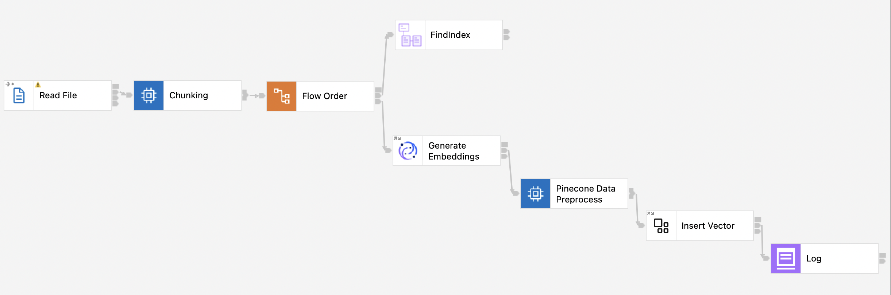
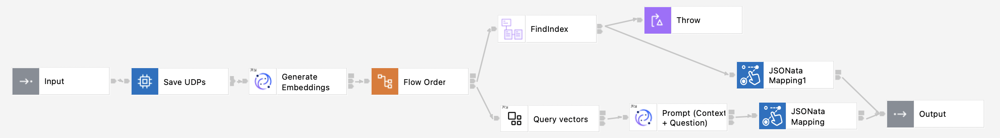

AI Pattern: RAG


The RAG (Retrieval-Augmented Generation) pattern includes flows that index data into a vector database and query this index to fetch relevant information to enhance query response generation. This approach combines traditional retrieval techniques with generative AI to produce more accurate and context-aware responses.